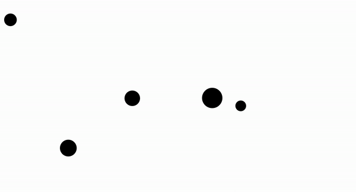
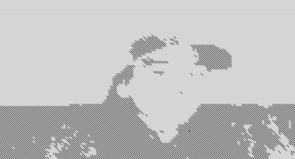
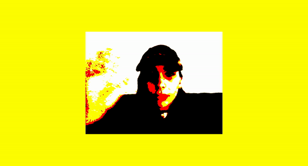
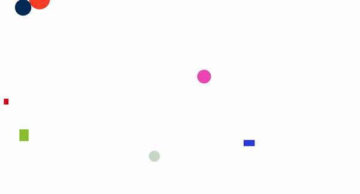
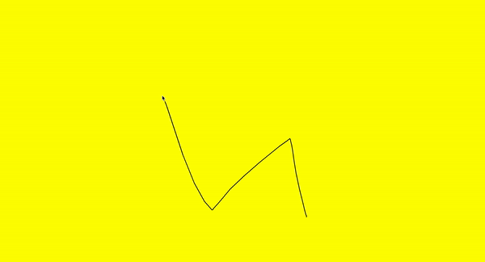

{1} In this sketch, a new shape is generated every 30 frames, where size and placement is randomised. Speed increases over time by 0.1%.

CLICK IMAGE TO VIEW CODE
{2} These balls are programmed to bounce within the frame. If you click on them, they move direction. Again, size and placement is randomised.

CLICK IMAGE TO VIEW CODE
{3} This sketch uses posenet to track your face through the video camera. I have programmed lines to follow the movement to generate a contemporary image.

CLICK IMAGE TO VIEW CODE
{4} This sketch is a simple camera reflection. I have applied a high level of posterisation to develop the intense saturation that you can see here.

CLICK IMAGE TO VIEW CODE
{5} In this sketch, a canvas of randomised shapes is generated when any part of the keyboard is pressed. The two primary functions for this sketch are; keyPressed and generateImage.

CLICK IMAGE TO VIEW CODE
{6} In this sketch, the mouse acts as a pen, without needing to hold down the cursor it will map your movements. This happens because the line is set to the mouse's X and Y location.